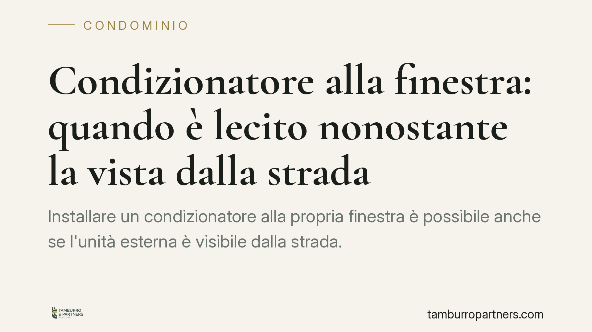

Tubatura rotta in casa: chi paga i danni al vicino
Una perdita d'acqua che macchia il soffitto del vicino apre subito una domanda: chi paga? La distinzione decisiva è tra tubature comuni e private. Quando il guasto è in proprietà e…

Rappresentante dei lavoratori per la sicurezza (RLS): ruolo, compiti e tutele
Il Rappresentante dei Lavoratori per la Sicurezza (RLS) è il canale attraverso cui i lavoratori partecipano alla gestione della prevenzione in azienda. La funzione di rappresentanz…

Recesso facile nell'e-commerce: verso l'obbligo del "tasto per disdire"
Si torna a parlare di un obbligo, per gli operatori e-commerce, di rendere il recesso semplice quanto l'acquisto, attraverso una funzione dedicata di facile accesso. Il tema si ins…

TFR e dimissioni volontarie: spetta comunque al lavoratore
Il trattamento di fine rapporto spetta a ogni lavoratore subordinato quando il rapporto cessa, quale che sia la causa. Anche le dimissioni volontarie non fanno eccezione: la scelta…

Fioriere in condominio: chi paga spese e danni da infiltrazione
Le fioriere in condominio generano due questioni distinte: chi sostiene le spese di manutenzione e chi risponde dei danni da infiltrazione ai piani inferiori. La risposta cambia a …

TFR e datore fallito: come attivare il Fondo di Garanzia INPS
Quando il datore di lavoro fallisce e non paga il trattamento di fine rapporto, il lavoratore può rivolgersi al Fondo di Garanzia INPS. Una recente pronuncia del Tribunale di Lagon…

Tetto che copre solo alcuni: le spese non gravano su tutti
Il Tribunale di Avellino, con la sentenza n. 837/2026, ha annullato una delibera che ripartiva tra tutti i condomini le spese di un tetto a copertura di una sola parte dell'edifici…

Recupero crediti dai morosi: quando risponde l'amministratore di condominio
L'amministratore di condominio ha l'obbligo di attivarsi per recuperare i contributi non versati, senza attendere l'autorizzazione dell'assemblea. La giurisprudenza conferma che l'…

Dimissioni del lavoratore: quando serve la forma scritta
Rassegnare le dimissioni non è mai un gesto informale. Dal 2016 la legge impone una procedura telematica obbligatoria, che ha di fatto sostituito la vecchia lettera consegnata a ma…

Direttore dei lavori e difetti dell'opera: quando risponde con l'impresa
La giurisprudenza conferma che il direttore dei lavori può rispondere in solido con l'impresa appaltatrice per i difetti dell'opera. Non basta delegare l'esecuzione al costruttore:…

Spese condominiali e casa familiare assegnata: chi paga?
Il coniuge separato che vive nella casa familiare assegnata dal giudice è tenuto a pagare le spese condominiali direttamente al condominio? La Cassazione risponde di no: l'assegnaz…

Canone concordato e cedolare al 10%: opportunità o rendita per i soli proprietari?
Il canone concordato, sostenuto dalla cedolare secca al 10%, viene presentato come strumento di calmieramento degli affitti. In alcuni mercati, però, produce rendite non lontane da…

Condizionatore alla finestra: quando è lecito nonostante la vista dalla strada
Installare un condizionatore alla propria finestra è possibile anche se l'unità esterna è visibile dalla strada. La Cassazione ribadisce che il singolo condomino può servirsi della…
Caparra e agente immobiliare: quando va restituita
Chi versa una somma all'agente immobiliare in fase di trattativa spesso ignora chi ne sia il vero destinatario. Se l'affare va a monte, l'acquirente ha diritto alla restituzione: q…
Telecamere domestiche in condominio: fin dove possono riprendere
Installare una telecamera davanti al proprio ingresso è legittimo, ma non consente di sorvegliare scale, pianerottoli o gli spazi altrui. Il perimetro delle riprese incide su priva…
Malattia da stress e comporto: quando il licenziamento è illegittimo
Un tribunale ha annullato il licenziamento di un lavoratore assentatosi per una patologia psichica indotta dalle condotte aggressive del suo caporeparto. Il principio è netto: le a…
Recinzione del viale condominiale: innovazione vietata o ordinaria amministrazione?
La Corte di Cassazione torna sul confine tra innovazione vietata e ordinaria amministrazione. Recintare un viale comune, di per sé, non altera la destinazione del bene e non richie…
Cortile condominiale: chi non ne fruisce può non pagare le spese
Non tutti i condomini devono pagare le spese del cortile. La Cassazione ha chiarito che l'unità immobiliare priva di qualsiasi collegamento con l'area comune resta esclusa dai rela…
Assemblea di condominio: nessun obbligo di allegare i documenti all'avviso di convocazione
Con l'ordinanza n. 12591/2026 la Cassazione precisa che l'amministratore non è tenuto ad allegare all'avviso di convocazione tutta la documentazione oggetto di delibera. Il condòmi…
Annullamento del bilancio condominiale: effetti e obblighi
Il giudice che annulla la delibera di approvazione del bilancio condominiale incide su tutta la gestione contabile del condominio. L'annullamento opera in modo retroattivo, travolg…
Quota sindacale straordinaria: cos'è e chi deve pagarla
Dopo il rinnovo di un contratto collettivo può essere richiesta ai lavoratori una quota sindacale straordinaria, spesso tramite trattenuta in busta paga. La questione riguarda anch…
Delibera condominiale che approva lavori già eseguiti: è valida?
L'amministratore ordina lavori senza passare dall'assemblea e chiede poi la ratifica. Ma la delibera che approva a posteriori spese non autorizzate non è sempre valida. Fuori dai c…
Ferie non godute dei docenti precari: quando spetta la monetizzazione
Il docente precario che termina il contratto senza aver fruito delle ferie ha diritto a un'indennità sostitutiva? La risposta non è automatica. L'orientamento della Cassazione dist…
Rendiconto non approvato e compenso dell'amministratore: il diritto resta
Bocciare il rendiconto non cancella il compenso dell'amministratore. Il diritto al pagamento nasce dal contratto di mandato, non dall'approvazione del bilancio: sono due piani dist…

Conto cointestato: rischi patrimoniali e alternative per coppie ed eredi
Il conto cointestato è spesso scelto per comodità familiare, ma nasconde effetti giuridici sottovalutati: dalla presunzione di parità delle quote all'aggressione da parte dei credi…

Spese condominiali arretrate dopo la vendita: chi paga?
Quando un appartamento viene venduto, non è sempre chiaro chi debba pagare le spese condominiali maturate prima del rogito. La distinzione tra spese ordinarie e straordinarie e la …

Amministratore di condominio in proroga: spetta il compenso?
L'amministratore che continua a operare dopo la scadenza del mandato, in regime di prorogatio, non ha diritto a un compenso ulteriore: gli spetta solo il rimborso delle spese antic…

Neopatentato e incidente con l'auto del padre: la rivalsa dell'assicurazione non è automatica
Un neopatentato causa un sinistro con l'auto del padre: l'assicurazione paga i danni ma poi chiede il rimborso all'assicurato, invocando una clausola di esclusione. La Cassazione b…

Cedolare secca al rinnovo del 4+4: quale canone indicare nel modello RLI
Al primo rinnovo automatico di un contratto di locazione abitativo 4+4 in regime di cedolare secca, il locatore deve chiarire quale canone comunicare all'Agenzia delle Entrate tram…

Il garante dell'affitto risponde sempre dei debiti dell'inquilino?
Chi presta garanzia per un contratto di locazione assume un impegno concreto: rispondere dei debiti dell'inquilino verso il proprietario. Ma la responsabilità non è illimitata né p…